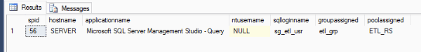

Resource Governor Demo
In this demonstration we will walk through creating a resource pool and define CPU and MEMORY limits, create a workload group, and finally a UDF classifier. The classifier will be used to map a SQL Login to the correct workload group so when the user logs in the users will work within the limits defined in the resource pool.
Step 1 - Create our ETLUser Login
We first need to create a login that will perform our ETL process.
use [master] go create login [sg_etl_usr] with password = 'N3wP@ssw0rd$' go |
Step 2 - Create our Resource Pool
We need to first, create a resource pool and specify our resources for this pool.
create resource pool etl_rs with ( min_cpu_percent=0, max_cpu_percent=5, min_memory_percent=0, max_memory_percent=5) go |
Step 3 - Create a Workload Group
Here we are going to create a workload group that will map to our resource pool.
create workload group etl_grp using etl_rs ; go |
Step 4 - Create the User-Defined Classifier
In this step we will create a user-defined classifier that will map our login to the resource group when the user 'sq_etl_usr' logs in to the server.
use [master] go create function dbo.udf_rs_classifier() returns sysname with schemabinding as begin declare @wrkgrp as sysname if(suser_name() = 'sg_etl_usr') set @wrkgrp = 'etl_grp' else set @wrkgrp = 'default' return @wrkgrp end go |
Step 5 - Enable Resource Governor
By default, Resource Governor is disabled. You will need to enable it for it to take affect. This does not require a restart of SQL Server to do so.
alter resource governor with (classifier_function=[dbo].[udf_rs_classifier]); go alter resource governor reconfigure go |
Step 6 - Test our classifier function
Lastly, we need to test to see if our classifier function is working properly. You will need to open another query window and login with the user 'sg_etl_usr' you created we Step 1.In another query window, login with sysadmin credentials and execute the T-SQL code below. This code will show you that the login 'sg_etl_usr' is logged in with the workload group we created.
use [master]
go
select
s.[session_id] as 'spid',
s.[host_name] as 'hostname',
s.[program_name] as 'applicationname',
s.[nt_user_name] as 'ntusername',
s.[login_name] as 'sqlloginname',
rswg.[name] as 'groupassigned',
rsrp.[name] as 'poolassigned'
from sys.dm_exec_sessions s
inner join sys.dm_resource_governor_workload_groups rswg
on s.group_id = rswg.group_id
inner join sys.dm_resource_governor_resource_pools rsrp
on rswg.pool_id = rsrp.pool_id
where s.login_name = 'sg_etl_usr'
|
|  |
| Figure 1 - Query Results |